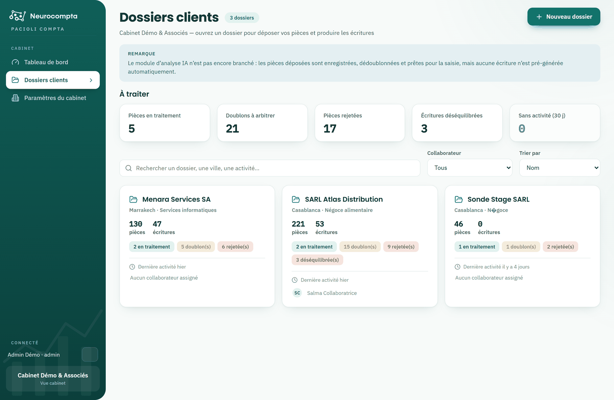

Bien démarrer avec Pacioli
Profils, accès aux dossiers et navigation.
Pacioli automatise la saisie comptable : vous déposez vos factures et vos relevés, l'analyse en extrait les montants et prépare les écritures. Vous vérifiez, corrigez si besoin, puis exportez.
L'application s'organise sur deux niveaux. Le niveau cabinet donne la vue d'ensemble et la liste de vos dossiers. Une fois un dossier ouvert, le menu de gauche bascule sur les fonctions comptables de ce dossier.

Deux profils
- Administrateur : voit tous les dossiers du cabinet, gère les collaborateurs et le contrat. À la connexion, il arrive sur le tableau de bord.
- Utilisateur : ne voit que les dossiers auxquels il est assigné. À la connexion, il arrive directement sur ses dossiers clients.
Accès aux dossiers
Un collaborateur ne voit un dossier, et ne peut y travailler, que s'il y est assigné. L'assignation est faite par un administrateur depuis les paramètres du dossier.
- Le collaborateur qui crée un dossier y est assigné automatiquement.
- Un administrateur accède à tous les dossiers sans avoir besoin d'y être assigné.
- Les noms des collaborateurs assignés apparaissent en pied de chaque carte de dossier.
Se déplacer dans l'application
- Ouvrez un dossier depuis la liste : le menu affiche Dépôt de pièces, Journal comptable, Liste des comptes, Lettrage & justificatifs, Export et Paramètres du dossier.
- Le lien en haut du menu, portant le nom de votre cabinet, referme le dossier et vous ramène à la vue d'ensemble.
- Le pied du menu rappelle en permanence qui est connecté et quel dossier est ouvert.
Si une entrée de menu ne s'affiche pas, vérifiez d'abord votre niveau : certaines fonctions n'existent qu'au niveau cabinet, d'autres seulement dans un dossier ouvert.